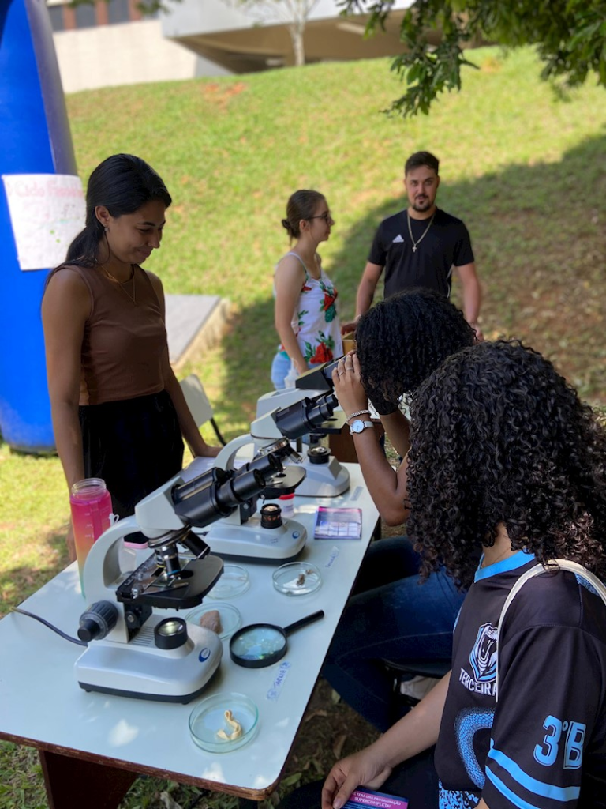
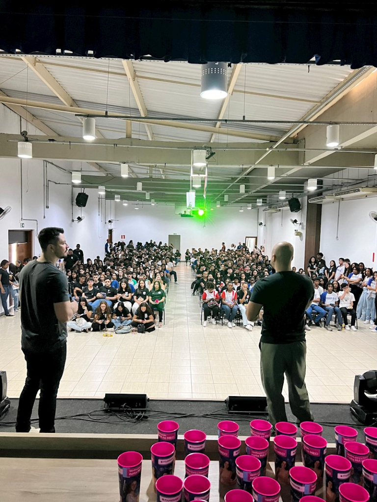
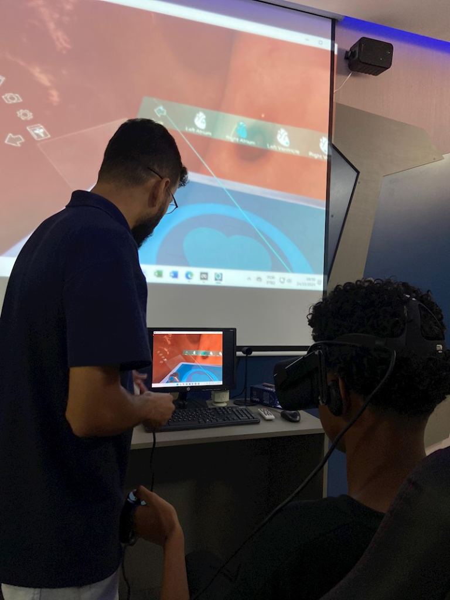
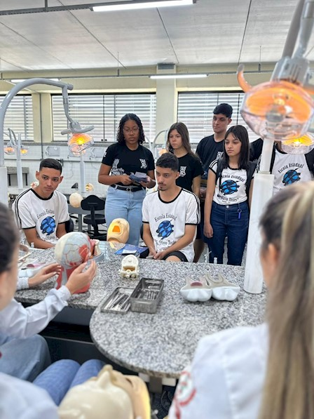
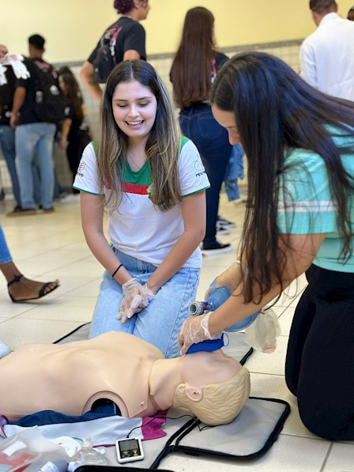
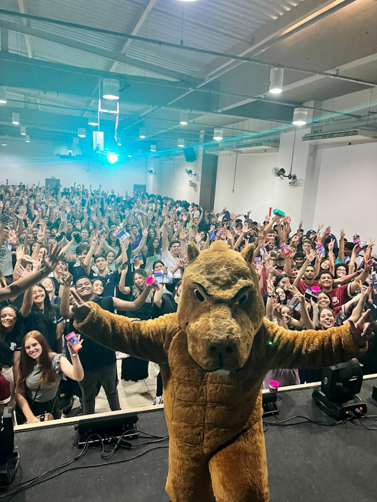

Atividades práticas de observação ao microscópio ao ar livre.
- Catalogação de flora e fauna;
- Biotecnologia agrícola e manejo sustentável;
- Pesquisa científica;
O evento oferece a oportunidade de conhecer de perto as diversas possibilidades do ambiente acadêmico por meio de oficinas nas áreas de saúde, ciências exatas e humanas.

Atividades práticas de observação ao microscópio ao ar livre.

Palestras interativas com os estudantes.

Simulação de anatomia humana com óculos de realidade virtual

Aula prática de anatomia e saúde bucal

Atividade prática de primeiros socorros e técnicas de reanimação num manequim

Divertindo entusiasmada com o público.
O evento “Experimente seu Futuro”, promovido pela FAMINAS, em Muriaé (MG), constitui uma importante iniciativa de aproximação entre estudantes do Ensino Médio e o Ensino Superior. Por meio de atividades práticas, palestras e contato com diferentes áreas profissionais, o evento contribui para a orientação vocacional e o desenvolvimento de perspectivas acadêmicas.
Além disso, proporciona aos jovens uma compreensão mais ampla das oportunidades oferecidas pela formação universitária, estimulando o interesse pelo conhecimento e o planejamento de carreira. Dessa forma, o evento pode influenciar positivamente a decisão dos estudantes de ingressarem no Ensino Superior, favorecendo sua qualificação acadêmica e profissional.